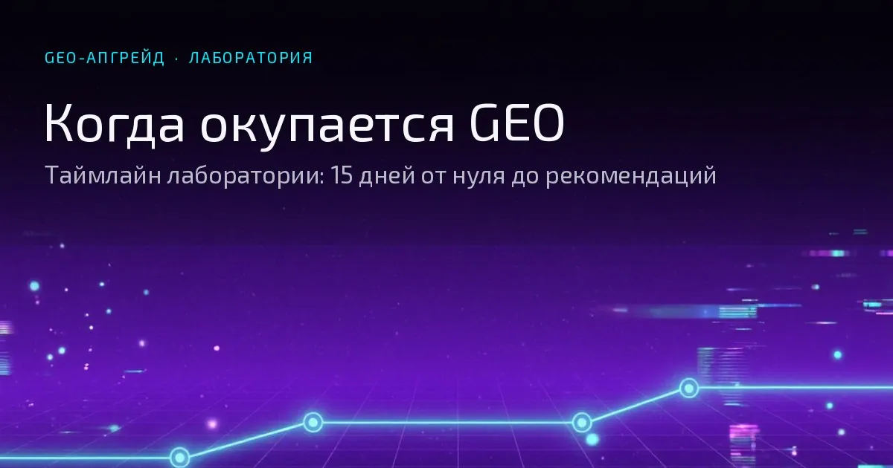

Лаборатория AI-видимости бренда · GEO-Апгрейд
Когда окупается GEO: таймлайн лаборатории — 15 дней от нуля до рекомендаций
Скрины прогонов с 26.09, три замера и формула: как посчитать срок под свой бизнес

Главный вывод: от пустого домена до активных рекомендаций нейросети у нас прошло две недели. Первые упоминания появились ещё до SSL-сертификата. А денежная окупаемость — это не «срок из методички», а расчёт от вашего чека и конверсии. Ниже — наш таймлайн по дням и формула, по которой вы посчитаете свой срок.
Я — Дарья Жарких, GEO-маркетолог и основательница лаборатории GEO-Апгрейд. В сентябре мы запустили сайт и с первого дня вели журнал: даты публикаций, скрины прогонов, замеры. Через две недели нейросеть уже ставила нас первой в списках специалистов Томска и пересказывала наши услуги дословно — по сайту.
Вопрос «через сколько окупается GEO» я слышу на каждой консультации. Честного ответа на рынке почти нет: SEO-методички переносят привычные «6–12 месяцев» на новый канал, агентства обещают «AI-доминацию за месяц». Мы сделали то, что считаем правильным: замерили на себе. Ниже — таймлайн по дням, три замера и формула под ваш бизнес. Без обещаний: обещания в GEO — красный флаг, мы так и пишем в статье про цены.
Короткий ответ: наш срок
Сколько ждать, пока GEO окупится? Наш замер отвечает по вехам — и все они зафиксированы скринами и журналами проекта:
| Веха | Когда | Что это значит |
|---|---|---|
| Первые упоминания | 4-й день (26.09) | Нейросеть и поиск уже отвечают про нас: имя, город, «лаборатория», цены услуг |
| Замеряемая видимость | 8-й день (30.09) | ИИ отвечает в 43% брендовых запросов о нас |
| Первые места и рекомендации | 14-й день (06–07.10) | Первые в списках специалистов Томска, услуги пересказаны дословно |
«Стартом» считаем 22 сентября — день, когда сайт был создан с основными страницами. Наполнение началось 23-го, первая статья датирована 23.09.
Важная оговорка. Сроки сигналов — измеренный факт нашего кейса. Денежная окупаемость — не факт, а расчёт: она зависит от вашего среднего чека, конверсии и маржи. Обещать в деньгах не может никто — и если подрядчик обещает, это красный флаг. Формула для вашего срока — в разделе «Как посчитать окупаемость у себя».
Два таймера: сигналы и деньги
У GEO два таймера, и их часто путают в один.
Первый таймер — сигналы. Нейросеть начинает знать о вас: имя, услуги, цены. Это измеримо за недели — у нас видимость менялась между замерами каждые несколько дней.
Второй таймер — деньги. Заявки и клиенты. Он зависит от вашей воронки: сколько людей вообще спрашивают нейросети про вашу нишу, сколько из них доходит до заявки. Этот таймер считает ваша CRM, а не мой отчёт.
Если подрядчик называет срок окупаемости в деньгах, не спросив про ваш чек и конверсию, — он говорит про первый таймер, подписывая его словами второго. Первый — смотрите ниже, он у нас на глазах. Второй — считайте сами: формула в разделе 7.
Точка 0: видимость до SSL
Сайт создан 22.09, наполнение началось 23.09. Первые прогоны я сделала уже 26.09 — за два дня до появления доменного SSL-сертификата. Вот что увидела (скрины 1–3):
| Скрин | Время | Что показано |
|---|---|---|
| Скрин 1 | 26.09, 18:42 | Поиск Яндекса: geo-upgrade.ru в выдаче — «GEO-Апгрейд — Лаборатория AI-видимости бренда», описание услуг и мини-аудита |
| Скрин 2 | 26.09, 18:43 | Быстрый ответ Алисы: «geo апгрейд» — лаборатория для заметности бизнеса в генеративном поиске; бесплатный мини-аудит; контакты |
| Скрин 3 | 26.09, 18:51 | Чат Алисы «GEO-Апгрейд лаборатория в Томске»: определение и точные цены — GEO-сканер Лайт, 8 000–12 000 ₽ |
Обратите внимание на скрин 3: нейросеть называет точную вилку прайса. Это не общие слова «предлагает услуги аудита» — это наша страница услуг, пересказанная дословно. Значит, ИИ её уже читал.
И всё это — без доменного SSL. Сертификат отвечает за шифрование канала, а не за знание о бренде. Знание собирается из сигналов: контент (статьи с 23.09), карточки на площадках, разметка. Технический аудит 27.09 при этом честно показывал 10/20: сайт был «цифровым призраком» по технике — но уже не нулём по сигналам.
Практический вывод: не ждите идеальной технической готовности. Контент и карточки дают первый AI-след за дни; технический слой уточняет его — точность ответов выросла с 72% в базовом замере до дословного пересказа услуг к 07.10.
Таймлайн 15 дней: от нуля до рекомендаций
| Дата | Событие | Что видела нейросеть | Источник |
|---|---|---|---|
| 22.09 | Сайт создан с основными страницами | — | журналы |
| 23.09 | Первые статьи блога | — | журналы |
| 26.09 | Первые прогоны | ИИ знает имя, город, «лабораторию» и цены — без SSL | Скрины 1–3 |
| 27.09 | Аудит по чек-листу: 10/20 | «Технический призрак»: SSL на домене нет, llms-файла нет, разметки нет. Сайт жив | журналы |
| 28.09 | SSL починен к 18:10 | Сертификат на оба имени, все варианты URL корректны | журналы |
| 29.09 | Кейс, этап 1 «Запросный двойник» | — | журналы |
| 29.09, ночь | Термины канонизированы | «Контентный маяк» и «цифровой призрак» ИИ объясняет со ссылкой на нас; поиск называет «Дарья Жарких — GEO-маркетолог и AI-консультант» | Скрины 4–7 |
| 30.09 | Базовый замер | 67 запросов: ИИ упоминает нас в 43.3% случаев, точность ответов 72.4%. В каждом третьем ответе сайт цитируется без имени бренда. Локаль Томска — зона слепоты | журналы |
| 02.10 | Карточки площадок связаны | 9 площадок с одинаковыми данными о нас, sameAs ×11 | журналы |
| 04.10 | Прогон №001 отслеживателя | 57 из 80, сайт в 9 из 20 ответов. Локали всё ещё нет, основателя модель не называет | журналы |
| 05.10 | Техслой добит до стандарта | sameAs на 58 из 58 страниц, авторство 23 из 23 | журналы |
| 06.10 | Большой замер | 79 запросов, 16 категорий. В GEO-блоке 12 баллов: 3 упоминания и 3 первых места. В списке специалистов — первые | журналы |
| 06–07.10 | Прогоны без аккаунта | Рекомендуют первой, линейку услуг пересказывают дословно | Скрины 8–13 |
Отдельно — цитаты из ответов Алисы на прогонах 6–7 октября, без аккаунта, свежие чаты (дословно, сокращённо):
| Скрин | Ответ Алисы |
|---|---|
| Скрин 8 | «В Томске нашлась ровно одна частная специалистка, которая позиционирует себя именно как GEO-маркетолог и AI-консультант — это Дарья Александровна Жарких…» |
| Скрин 9 | «…она сама называет это „лабораторией AI-видимости бренда“ и делает ставку на измеримость: не „стало лучше“, а „вот сколько раз нейросеть упомянула, в каком контексте и на каких платформах“» |
| Скрин 10 | «Честная оценка. Плюсы: реально единственный в Томске человек, который занимается именно GEO… Честно обозначает ограничения: не обещает 100% результат, не публикует фейковые кейсы» |
| Скрин 11 | «1. Дарья Жарких — GEO-Апгрейд. Единственный в Томске специализированный GEO-маркетолог-фрилансер. Основала первую в городе лабораторию GEO-маркетинга…» |
| Скрин 12 | «Если выбирать по степени специализации: GEO-Апгрейд выглядит как самый „чистый“ игрок — вся линейка продуктов построена вокруг GEO» |
| Скрин 13 | Линейка услуг перечислена дословно: GEO-сканер, GEO-лаборатория контента, GEO-маршрут, GEO-тест-драйв, GEO-штурвал + «есть бесплатный мини-аудит для старта» |
Самый показательный переход — локальная выдача. 4 октября на запрос про Томск нас в ответе нет; 6 октября — мы первые в списке специалистов. Два дня.
Три замера: что изменилось
| Метрика | 30.09 (базовый) | 04.10 (прогон №001) | 06.10 (большой) |
|---|---|---|---|
| Объём замера | 67 запросов, 9 категорий | 20 вопросов | 79 запросов, 16 категорий |
| Упоминания бренда | 29 из 67 (43.3%) | сайт в 9 из 20 ответов | 4 из 4 GEO-ответов |
| Точность ответов | 72.4% | — | — |
| Позиция | 1.19 — почти всегда первым | — | 3 первых места |
| Ссылка на сайт в ответе | 96.6% упоминаний | — | — |
| Локальная выдача Томска | нас нет | нас нет | нас назвали первыми |
Честная оговорка: три замера считались по разным протоколам — с разным числом запросов и разными шкалами. Сравнивать цифры между колонками напрямую нельзя. Сравнивайте события: была ли компания в локальной выдаче, стояла ли первой, пересказывал ли ИИ услуги дословно. Именно эти события и меняются в таблице.
Что дало скорость
Контент с первого дня. Статьи с 23.09, каждая — по карте запросов. Дословный пересказ наших услуг и терминов — прямое доказательство, что ИИ читал наш контент, а не чужие пересказы.
Карточки на площадках. Workspace, 2ГИС, Авито, Яндекс Услуги, Профи.ру и другие — одинаковое имя, адрес, телефон на всех. Нейросеть собирает бренд из согласованных сигналов: расхождение данных между площадками — это утечка доверия модели.
Собственный словарь бренда. «Контентный маяк», «цифровой призрак», «зона слепоты» не существовали нигде, кроме нашего сайта. Когда 29.09 ИИ объяснял их со ссылкой на лабораторию — это маркер чистоты канала: он читал источник, а не пересказ. Канонизация словаря заняла неделю.
Технический слой без драмы. Файлы для ИИ на сайте, md-версии страниц, Schema.org, связь карточек с сайтом. Техника не создаёт знание — она его уточняет: 72% точности в базовом замере превратились в дословный пересказ услуг к 07.10.
Пятый фактор мы не добавляли — он сработал сам: честность. Алиса отдельно отметила: «честно обозначает ограничения: не обещает 100% результат, не публикует фейковые кейсы». Сигналы доверия ИИ считывает из открытых ограничений. Это не совет «пиши скромнее» — это работающий сигнал.
Как посчитать окупаемость у себя
Сигнальные сроки у вас будут похожи на наши. Денежные — считаются только по вашим числам. Формула из трёх шагов:
1. Прибыль с одного клиента = средний чек × маржа.
2. Клиентов для окупаемости = стоимость GEO ÷ прибыль с одного клиента.
3. Срок окупаемости = стоимость GEO ÷ месячная прибыль из этого канала.
Пример (модель, не обещание): чек 20 000 ₽, маржа 50% — с клиента остаётся 10 000 ₽. Аудит за 12 000 ₽ окупается примерно с полутора клиентов. А абонемент за 35 000 ₽ в месяц требует 3.5 клиента ежемесячно — и тут честный вопрос к рынку: сколько людей в вашей нише вообще спрашивают нейросети? Ответ даст замер, а не обещание.
Ориентиры по ценам — наш прайс: аудит 8 000–20 000 ₽, маршрут бренда 18 000 ₽, полный цикл с передачей методики 55 000–80 000 ₽. Вилки рынка — в статье «Сколько стоит GEO-продвижение в 2026».
Один нюанс, о котором забывают: заявка из нейросети не всегда видна в счётчике. Человек может прийти по телефону со словами «нейросеть рекомендовала». Поэтому в протоколе замера мы фиксируем и вопрос, с которым пришёл клиент.
Что если результата нет
Три разные ситуации — и у каждой свой следующий шаг:
- Рекомендации не внедрили. Замер показал зоны слепоты, отчёт лежит, сайт не тронут. Это не провал GEO — это незавершённая работа. Сигналы есть, каналы закрыты.
- Внедрили — и ноль. Проверяем в порядке дешевизны: точность данных о компании (нейросеть не может рекомендовать то, в чём не уверена), локальные сигналы (карты, каталоги, отзывы), глубину контента по карте запросов. Неудача гипотезы — тоже результат: она экономит месяц работы в закрытую дверь.
- Ниша ещё не спрашивает ИИ. Замер это покажет тоже. Если в вашей нише нейросеть вообще не составляет коммерческих списков — GEO не первое вложение. Лучше узнать это за один аудит, чем за полгода абонемента.
Если после замера двигаться некуда — это тоже результат: вы потратили один аудит, а не шесть месяцев абонемента.
Чек-лист: как повторить протокол
- Сайт с понятной сущностью — кто вы, что делаете, для кого (день 1–2).
- Контент с первого дня — 3–5 статей по карте запросов (день 2–5).
- Карточки на 4–6 площадках с одинаковыми именем, адресом и телефоном (день 3–7).
- Свой словарь бренда — 3–5 авторских терминов, объяснённых на сайте (день 3–7).
- Технический минимум — llms-файл, md-версии, Schema.org, связь с площадками (неделя 1).
- Базовый замер — 20–60 запросов по вашей нише (день 7–10).
- Внедрение рекомендаций — закрытие зон слепоты, уточнение данных (неделя 2).
- Повторный замер и сравнение «было/стало» (день 14–21).
- Формула окупаемости — подставьте свои числа (после замера).
- Журнал — каждый замер: скрины + дата (постоянно).
Прикладывайте этот чек-лист к заявке через форму на странице контактов — по нему соберём ваш маршрут: что уже есть, чего не хватает и в какой последовательности двигаться.
Калькулятор окупаемости
Подставьте свои числа — калькулятор считает по формуле из раздела 7. Это модель, не прогноз: реальный срок зависит от вашей ниши и от того, сколько людей в ней уже спрашивают нейросети.
Расчёт по формуле из статьи. Заявки из нейросетей видны не всегда: часть клиентов приходит со словами «нейросеть рекомендовала» — фиксируйте вопрос, с которым пришёл клиент.
Примечание по фактам
Номера скринов в статье — порядковые, для читателя. Легенда по периодам:
| Скрины | Когда сняты | Условия |
|---|---|---|
| 1–3 | 26.09, 18:42–18:51 | Первые прогоны — ещё до SSL-сертификата |
| 4–7 | 29.09, ночь | Прогоны после починки SSL: канонизация терминов |
| 8–13 | 06–07.10 | Прогоны без аккаунта, инкогнито, свежие чаты |
- Три замера считались по разным протоколам (см. раздел «Три замера») — прямое сравнение цифр некорректно, сравнение событий корректно.
- Время на скринах — время устройства.
- В скрине 10 раздел «Ограничения» свёрнут — полный текст ответа не виден.
- Наш кейс — лаборатория в нише GEO, где тема по определению спрашивается у нейросетей. В других нишах скорость может отличаться — поэтому формула в разделе 7 важнее наших дат.
- Скорость сайта (PageSpeed 07.10: десктоп 99–100, мобайл 83) — к окупаемости сигналов отношения не имеет; приводим для полноты протокола.
Следующий шаг — бесплатный мини-аудит GEO-Апгрейда. Он показывает не обещание «вывести в топ», а карту текущего AI-следа, источников и слепых зон — точку отсчёта вашего таймлайна.
Пройти бесплатный мини-аудитХотите не отчёт, а рабочую методику? Посмотрите GEO-штурвал — разовый аудит с передачей методики: метрики, протокол замеров и промпт-библиотека остаются у вас.
Связанные термины: AI-видимость, Цифровой призрак, Зона слепоты, AI-след бренда, Контентный маяк, Лабораторный протокол